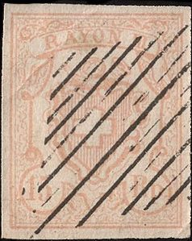
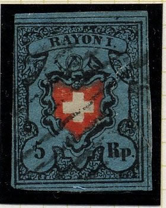
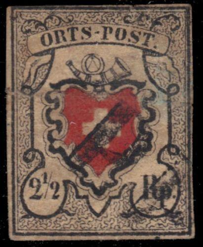
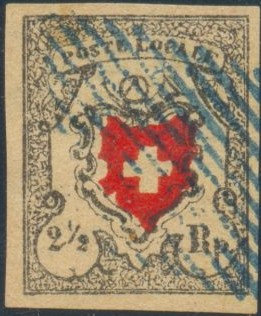
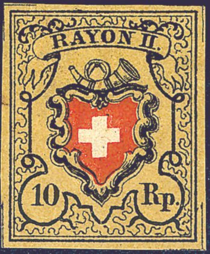
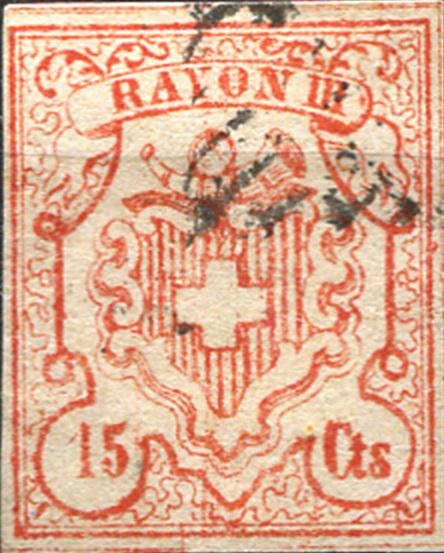
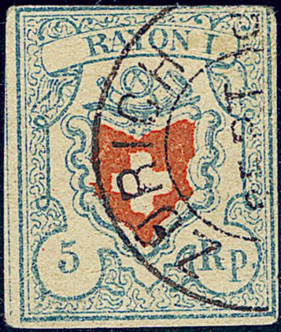
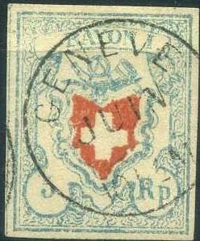

Return To Catalogue - Switzerland overview - Switzerland issues from 1850-1853 - Forgeries of the 1850 issue, part 2 - Forgeries of the 1850 issue, part 3 (Sperati) - Forgeries of the 1850 issue, part 4 (Fournier) - Cancels on first federal issues - Types of the 1850 issue, part 1 - Types of the 1850 issue, part 2 - Issues form 1854-1881
Note: on my website many of the
pictures can not be seen! They are of course present in the
catalogue;
contact me if you want to purchase the catalogue.
Forgeries of the 1850 issue, part 2,
Forgeries of the 1850 issue, part 3
(Sperati)
Forgeries of the 1850 issue, part 4
(Fournier)
Forgeries of the 1850 issue, part 5 (more
Fournier forgeries)
For typical cancels on first federal issues click here.
Many forgeries exists, they are often hard to distinguish from genuine stamps because many types of the genuine stamps exist as well. Examples of forged stamps:
  


"ORTS-POST" forgery with strange wavy pattern above the
"PO" which none of the genuine types has. It was made
by the forger Venturini, who based
this forgery on the genuine "POSTE LOCALE" type 28 (see
third image)


"ORTSPOST" forgery with a very pointed left hand side
of the horn.


A rather common forgery of the "ORTS-POST" stamp. I've
some Neuchatel forgeries being printed in one sheet, together
with some of the above 5 c "ORTSPOST" stamps, 4 c and 5
c Vaud stamps and the Winterthur stamps (essentially all old
Swiss stamps that were printed in black and red). Click here for such a sheet.

I've been told that this forgery was made somewhere in the 1960's
Two very dubious items with mute cancels


Two forgeries of the 5 rp stamps with the same background
pattern. Possibly made by the same forger.


More forgeries of the 5 rp stamps with the same background
pattern. The pattern does not seem to agree with any of the
genuine types. I've been told that these forgeries were made by
the forger Venturini.


Two very similar forgeries of the 10 Rp stamps. The bottom part
of the posthorn is broken in both stamps. The background patterns
seem to be slightly different.
Panelli forgeries:


I've been told that the above forgery of the 15 Rp stamp is a Panelli forgery. This particular forgery has the overprint 'Marke falsch' (=stamp forged in German).


I've also seen this forgery with a "FAUX" overprint in
the Fournier Album. Forgeries of the 1850
issue, part 4 (Fournier). Note the peculiar way in which the
ribbon hangs at the left hand side.

Two 'POSTE LOCALE' forgeries

(Another pair made by the same forger, with and without cancel)


These forgeries also have the same background pattern; this
background does not correspond to any of the genuine background
patterns

Very dubious stamp.



These forgeries have the same background pattern. Note the weird
shape of the '1' in 'RAYON 1'. In the Poste Locale stamps the
words 'POSTE LOCALE' are with too large lettering. Also note that
in the 15 Cts the '15' is placed too far to the right.
 

(These forgeries have the same background pattern)

(Part of a sheet of forged 15 rp and 15 cts stamps)

Very blur forgery.

Forgery with "GENEVE JUIN 10 1/2 M" cancel as also can
be found in the Fournier Album.


Dubious items: 15 rp stamps, they do not appear to agree with any
of the genuine types, forgeries?

Photographically reproduced 15 Rp, type 2 (but printed twice!)
Switzerland forgeries of
the 1850 issue, part 2
Forgeries of the 1850 issue, part 3
(Sperati)
Forgeries of the 1850 issue, part 4
(Fournier)
Forgeries of the 1850 issue, part 5 (more
Fournier forgeries)

{kind=link}
{kind=link}
{kind=link}
{kind=link}
{kind=link}
{kind=link}
{kind=link}
{kind=link}
{kind=link}